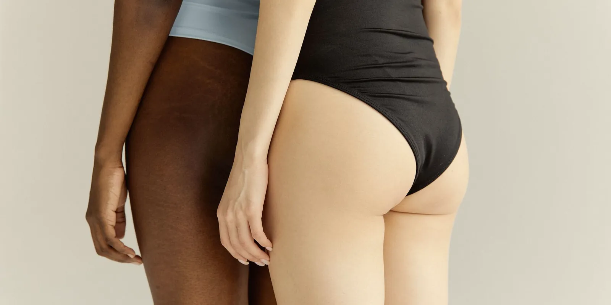

Várices y menopausia: qué cambia en esta etapa
Llevas meses notando que las venas de las pantorrillas se marcan más, justo desde que empezaron los sofocos y los cambios en tu ciclo. Te preguntas si tiene que ver con la menopausia, o si de ahora en adelante te va a tocar ver las piernas peor cada año que pase.

No es que el día que te llega la menopausia las venas decidan rendirse de un momento a otro, aunque algunas semanas se sienta así. Entre várices y menopausia sí hay relación, pero no es la fórmula simple de "bajó el estrógeno, salieron las venas": en esta etapa se juntan factores hormonales, de peso y de movimiento que afectan tus piernas de forma distinta. La insuficiencia venosa es más frecuente en mujeres y su edad promedio de aparición ronda los 52 años, justo cuando buena parte de las colombianas atraviesa la menopausia. Por eso vale la pena entender qué papel juega esta etapa, sin exagerar ni restarle importancia.
Várices y menopausia: qué papel juegan las hormonas
Los médicos vasculares llevan décadas señalando a las hormonas femeninas como parte de la explicación de por qué las várices son más comunes en mujeres. La Cleveland Clinic, uno de los centros médicos de referencia en Estados Unidos, incluye la menopausia, el embarazo y los anticonceptivos con estrógeno entre los factores hormonales que pueden volver menos firme la pared de las venas y facilitar que se dilaten.
En esta etapa, los niveles de estrógeno y progesterona dejan de moverse de forma cíclica y tienden a caer de manera sostenida, lo que se ha relacionado con menos colágeno en los tejidos y, en teoría, con paredes venosas y válvulas algo menos firmes.
Lo que dice la evidencia y lo que todavía no sabemos
Un estudio publicado en el Journal of Vascular Surgery con 104 mujeres menopáusicas sin terapia hormonal encontró algo que no calza con la historia de "menos estrógeno, peores venas": las que tenían los niveles más altos de estradiol propio, no los más bajos, presentaban más várices y venas más distensibles. Vale la pena leerlo con cuidado, eso sí: es un estudio pequeño, de un solo momento en el tiempo, y un análisis posterior sobre ese mismo grupo encontró que el sobrepeso explicaba la asociación mejor que el estrógeno.
Dicho simple: la hormona importa, pero probablemente no es la protagonista única.
Lo que sí tiene más respaldo en revisiones sobre insuficiencia venosa en mujeres es que la edad y los antecedentes familiares se asocian con la enfermedad de forma más consistente que un solo factor hormonal. Aun así, la menopausia sigue siendo, para muchas, el momento en que las várices que ya tenían se notan más, o en que aparecen las primeras.
La menopausia no es la única causa de que te salgan várices, pero sí es, para muchas mujeres, el momento en que el cuerpo deja de disimular lo que las venas venían acumulando desde antes.
Qué se suma durante la menopausia: peso, sedentarismo y terapia hormonal
Varios factores que se vuelven más comunes en la menopausia pueden sumarse al cuadro, más allá de las hormonas. El aumento de peso de esta etapa añade presión sobre las venas; la menor actividad física apaga la bomba muscular de la pantorrilla que ayuda a que la sangre suba; y los antecedentes familiares, que no cambian con la edad, siguen siendo uno de los factores más consistentes en los estudios sobre insuficiencia venosa.
Sobre la terapia hormonal, la duda más frecuente es si empeora las várices. La evidencia disponible sobre ese punto concreto es limitada e inconsistente, y no permite afirmar que la cause ni que las prevenga. Aparte de las várices, distintos estudios han relacionado la terapia hormonal con un mayor riesgo de trombosis venosa. Por eso es importante que tu ginecólogo conozca tu historia completa si ya tienes várices, antecedentes de trombosis u otros factores de riesgo, para que los tenga en cuenta al decidir contigo: no es algo que debas resolver por tu cuenta ni que nosotros podamos indicarte de forma genérica.
Eco doppler, compresión y otros cuidados que puedes empezar ya
Si ahora notas que las várices avanzan, que aparecen nuevas o que las piernas se hinchan más al final del día, lo más útil no es adivinar si es "cosa de la menopausia", sino pedir una valoración. Un eco doppler venoso en Medellín permite ver cómo está funcionando el retorno de la sangre en tus piernas y si las válvulas de las venas cumplen bien su función; en nuestro consultorio de El Poblado, este examen se hace ahí mismo.
Mientras llega esa valoración, algunas medidas conservadoras pueden ayudarte a sentirte mejor:
- Medias de compresión graduada, ajustadas a tu talla, que pueden ayudar a controlar la pesadez y la hinchazón.
- Moverte con frecuencia, en vez de pasar muchas horas sentada o de pie sin cambiar de posición.
- Elevar las piernas por encima del nivel del corazón un rato al día, sobre todo al final de la jornada.
- Cuidar el peso, dentro de lo que sea realista para ti, porque cada kilo de menos quita algo de presión sobre las venas.
- Revisar la piel de las piernas con regularidad, para notar a tiempo cambios de color o heridas que no cicatrizan.
En Seravena preferimos no asumir que toda hinchazón o várice nueva durante la menopausia es "normal de la edad": nos parece más seguro confirmarlo primero con un eco doppler, porque esa misma hinchazón puede tener otro origen, como la retención de líquidos.
Si tus várices han cambiado en los últimos meses, no necesitas esperar a tu próxima cita de rutina con el ginecólogo para empezar: puedes fotografiar hoy mismo cómo se ven tus piernas y anotar si duelen al tacto o si la hinchazón baja al elevarlas por la noche. Esa comparación le ayuda a tu médico a saber si algo cambió de verdad o si fue solo percepción.
Si quieres entender cómo cambian tus piernas en otros momentos de tu vida, nuestra guía sobre cuidar las piernas en cada etapa de la vida reúne el embarazo, los viajes largos, el calor y esta etapa. Si además te preocupa el volumen o el dolor en las piernas, puedes leer lipedema y menopausia: por qué empeora. Y si tus várices empezaron en un embarazo anterior y ahora volvieron con fuerza, te sirve várices en el embarazo: por qué salen y qué hacer.
Conoce más sobre cómo acompañamos la salud vascular en cada etapa de la vida, y cuando quieras resolver tus dudas, agenda tu valoración con nuestro equipo.
Preguntas frecuentes
¿La menopausia causa várices?
No de forma directa. La menopausia no es la única causa de las várices: influyen también la genética, el embarazo, el sedentarismo y el sobrepeso. Lo que sí puede pasar es que los cambios hormonales de esta etapa, junto con esos otros factores, hagan que las várices que ya existían se noten más o que aparezcan las primeras.
¿Por qué me salen várices nuevas en la menopausia si antes no tenía?
Antes de la menopausia, factores como el embarazo o el aumento de peso ya pueden haber debilitado algunas venas sin que se note. Durante la menopausia, los cambios hormonales, el sedentarismo y el aumento de peso que muchas mujeres experimentan en esta etapa pueden sumarse y hacer que esas venas se dilaten lo suficiente para volverse visibles.
¿La terapia hormonal de la menopausia empeora las várices?
La evidencia disponible hoy es limitada e inconsistente, y no permite afirmar que la terapia hormonal cause ni que prevenga las várices. Si estás considerando esta terapia y ya tienes várices o antecedentes de trombosis, cuéntaselo a tu ginecólogo para que lo tenga en cuenta en la decisión.
¿Qué puedo hacer si mis várices empeoran en la menopausia?
Lo más útil es pedir una valoración vascular con eco doppler para confirmar cómo está funcionando el retorno venoso, en vez de asumir que es solo cosa de la edad. Mientras tanto, usar medias de compresión bien ajustadas, moverte con frecuencia, elevar las piernas y cuidar el peso puede ayudarte a sentirte mejor.